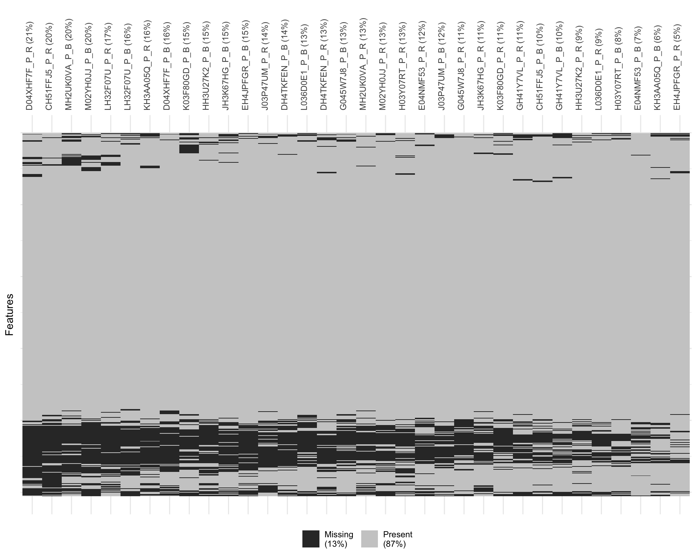
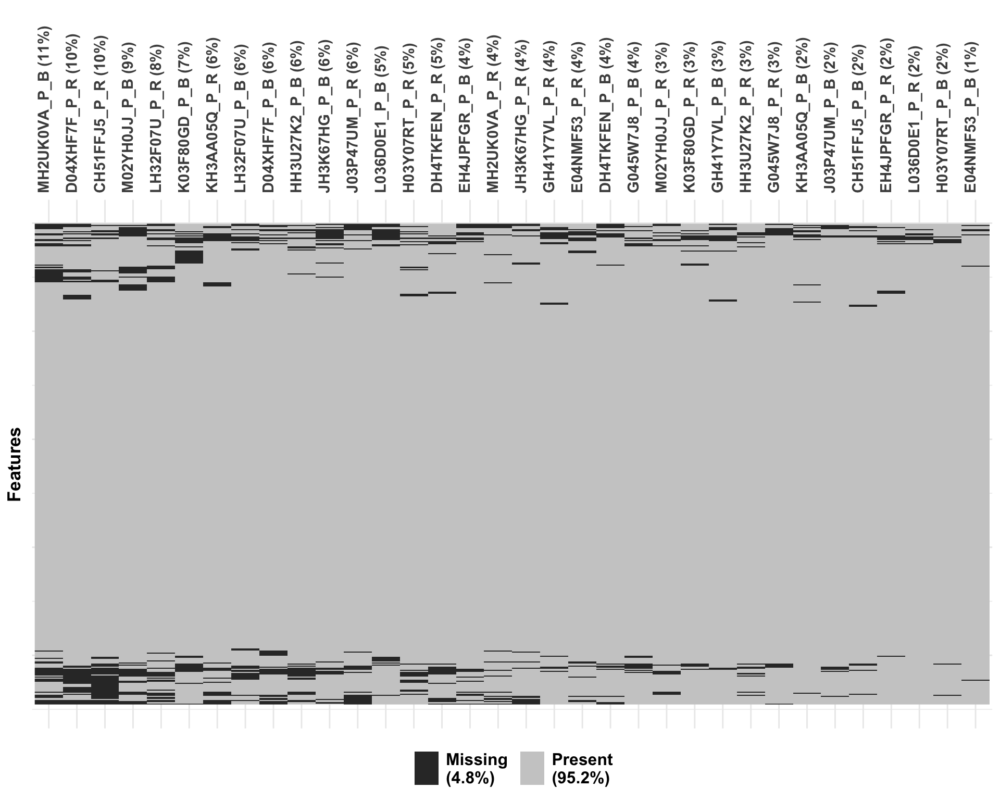
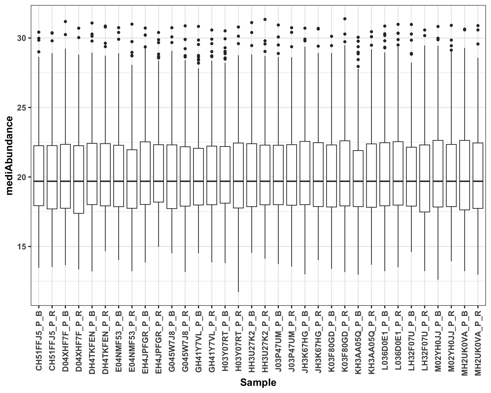

Preprocessing: Method development lung cancer patient cohort
Qian-Wu Liao
Last updated: 2023-05-17
Checks: 6 1
Knit directory:
SMART-CARE_LungCancer_MethodDev/
This reproducible R Markdown analysis was created with workflowr (version 1.7.0). The Checks tab describes the reproducibility checks that were applied when the results were created. The Past versions tab lists the development history.
Great! Since the R Markdown file has been committed to the Git repository, you know the exact version of the code that produced these results.
Great job! The global environment was empty. Objects defined in the global environment can affect the analysis in your R Markdown file in unknown ways. For reproduciblity it’s best to always run the code in an empty environment.
The command set.seed(20230425) was run prior to running
the code in the R Markdown file. Setting a seed ensures that any results
that rely on randomness, e.g. subsampling or permutations, are
reproducible.
Great job! Recording the operating system, R version, and package versions is critical for reproducibility.
Nice! There were no cached chunks for this analysis, so you can be confident that you successfully produced the results during this run.
Using absolute paths to the files within your workflowr project makes it difficult for you and others to run your code on a different machine. Change the absolute path(s) below to the suggested relative path(s) to make your code more reproducible.
| absolute | relative |
|---|---|
| /Users/qianwu/Desktop/SMART-CARE_LungCancer_MethodDev | . |
Great! You are using Git for version control. Tracking code development and connecting the code version to the results is critical for reproducibility.
The results in this page were generated with repository version 067f268. See the Past versions tab to see a history of the changes made to the R Markdown and HTML files.
Note that you need to be careful to ensure that all relevant files for
the analysis have been committed to Git prior to generating the results
(you can use wflow_publish or
wflow_git_commit). workflowr only checks the R Markdown
file, but you know if there are other scripts or data files that it
depends on. Below is the status of the Git repository when the results
were generated:
Ignored files:
Ignored: .DS_Store
Ignored: .RData
Ignored: .Rhistory
Ignored: analysis/.DS_Store
Ignored: code/.DS_Store
Ignored: data/.DS_Store
Ignored: output/.DS_Store
Untracked files:
Untracked: code/about.Rmd
Untracked: code/feature_selection.Rmd
Untracked: code/license.Rmd
Untracked: code/mofa_downstream_analysis.Rmd
Untracked: code/mofa_factors_investigation.Rmd
Untracked: code/workflowr_commands.R
Untracked: data/AG_Hell/
Untracked: data/AG_Hopf/
Untracked: data/AG_Krijgsveld/
Untracked: data/mofa/
Untracked: data/patient_metadata.tsv
Untracked: data/stats/
Untracked: output/AG_Hell/
Untracked: output/AG_Hopf/
Untracked: output/AG_Krijgsveld/
Untracked: output/heatmap_tar_untar_PM.png
Untracked: output/heatmap_tar_untar_TM.png
Untracked: output/mofa_barplot_performance.png
Untracked: output/mofa_boxplot_UntarBPM_UntarBPL_DDABPP.png
Untracked: output/mofa_boxplot_UntarBPM_UntarBPL_DDABPP_TarTTP.png
Untracked: output/mofa_setup_UntarBPM_UntarBPL_DDABPP.png
Untracked: output/mofa_setup_UntarBPM_UntarBPL_DDABPP_TarTT.png
Untracked: output/network_tar_untar_PM.png
Untracked: output/network_tar_untar_TM.png
Untracked: output/percentage_sigFeats.png
Unstaged changes:
Deleted: analysis/about.Rmd
Modified: analysis/comparisons_targeted_untargeted.Rmd
Deleted: analysis/license.Rmd
Modified: analysis/mofa_varied_omics_combinations.Rmd
Modified: analysis/preliminary_analysis_targeted_DDA.Rmd
Modified: analysis/preliminary_analysis_untargeted.Rmd
Modified: analysis/preprocessing_untargeted.Rmd
Note that any generated files, e.g. HTML, png, CSS, etc., are not included in this status report because it is ok for generated content to have uncommitted changes.
These are the previous versions of the repository in which changes were
made to the R Markdown (analysis/preprocessing_DIA.Rmd) and
HTML (docs/preprocessing_DIA.html) files. If you’ve
configured a remote Git repository (see ?wflow_git_remote),
click on the hyperlinks in the table below to view the files as they
were in that past version.
| File | Version | Author | Date | Message |
|---|---|---|---|---|
| Rmd | 067f268 | LiaoQianWu | 2023-05-17 | Publish initial DIA proteomics preprocessing and single-omics analysis |
| Rmd | 5c0f19e | LiaoQianWu | 2023-05-03 | Add visualization of missing data in preprocessing_DIA.Rmd and amend typo in preliminary_analysis_untargeted.Rmd |
| Rmd | be9b101 | LiaoQianWu | 2023-05-02 | Finish preprocessing of DIA proteomics |
Description: Preprocess Plasma and Tissue DIA
Proteomics generated by Karim Aljakouch from AG Krijgsveld, simply
including data cleansing and data normalization (VSN). All needed
information of each dataset (2 in total) was then stored in
SummarizedExperiment objects for further analyses.
Q: 12 samples from Patient N02PM0LW, FH49U7TY, and F04ERF3M are missing.
Why? Tumor and Normal Tissue samples cannot be nicely separated,
bad quality. Append or change UniProt IDs to Gene names.
Load libraries
library('readr')
library('vsn')
library('visdat')
library('SummarizedExperiment')
library('tidyverse')
# Load user-defined functions
source('./code/misc.R')
# Set plot theme
th <- theme_bw(base_size = 15) +
theme(axis.title = element_text(face = 'bold'),
axis.text = element_text(face = 'bold'),
axis.ticks = element_line(linewidth = 0.8),
legend.text = element_text(size = 15))Plasma Proteomics
# Load unprocessed data
proPlasmaTab <- readr::read_tsv('./data/AG_Krijgsveld/20230104_MarcS_Method_Estab_Plasma.pg_matrix.tsv') %>%
dplyr::select(-c(Protein.Ids, First.Protein.Description)) %>%
tidyr::pivot_longer(cols = -c('Protein.Group', 'Protein.Names', 'Genes'),
names_to = 'Identifier',
values_to = 'Abundance') %>%
dplyr::mutate(Protein.Names = stringr::str_remove_all(Protein.Names, '_HUMAN'),
Identifier = stringr::str_remove_all(Identifier, 'D:.*oecf4.*Exploris_|_4\\.raw'))
# Retrieve sample metadata from another datasets
metadat <- readxl::read_excel('./data/AG_Hell/Thorax cohort_not-normalized_subset plasma.xlsx',
skip = 1) %>%
dplyr::select(c(`Sample Identification`, patients_tissue, Individual_ID, Status)) %>%
dplyr::filter(!is.na(`Sample Identification`)) %>%
dplyr::rename(Sample = 'patients_tissue',
Patient = 'Individual_ID',
Condition = 'Status',
Identifier = 'Sample Identification') %>%
dplyr::mutate(Identifier = stringr::str_remove(Identifier, '_3$'),
Condition = dplyr::case_when(Condition == 'BASELINE_SURGERY' ~ 'Baseline',
Condition == 'FOLLOW-UP' ~ 'Follow-up',
Condition == 'RECURRENCE' ~ 'Recurrence'))
# Create information on patient cancer recurrences
recurAnno <- dplyr::filter(metadat, Condition != 'Baseline') %>%
dplyr::mutate(Recurrence = dplyr::case_when(Condition == 'Follow-up' ~ 'No',
Condition == 'Recurrence' ~ 'Yes')) %>%
dplyr::select(c(Patient, Recurrence))
# Combine all information into a table
metadat <- dplyr::left_join(metadat, recurAnno, by = 'Patient')
proPlasmaTab <- dplyr::left_join(proPlasmaTab, metadat, by = 'Identifier')
# Convert long data to SE object (wide data)
proPlasma <- df2SummExp(proPlasmaTab, row_id = 'Protein.Group', col_id = 'Sample',
values = 'Abundance', row_anno = c('Protein.Names', 'Genes'),
col_anno = c('Condition', 'Patient', 'Recurrence', 'Identifier'))Display dimensions of data (34 samples and 505 features)
dim(proPlasma)[1] 505 34Display distribution of original data
ggplot(proPlasmaTab, aes(x=Sample, y=Abundance)) +
geom_boxplot() +
scale_y_log10() +
labs(y = 'Protein abundance') +
th + theme(axis.text.x = element_text(angle = 90, vjust = 0.5, hjust = 1))
Display data missingness
exprMat <- SummarizedExperiment::assay(proPlasma)
vis_miss(exprMat, cluster = T, sort_miss = T) +
labs(y = 'Features') +
theme(axis.text.x = element_text(angle = 90, vjust = 0.5, hjust = 0),
axis.text.y = element_blank())
Perform VSN and display distribution of normalized data
# Perform VSN
exprMat <- as.matrix(SummarizedExperiment::assay(proPlasma))
fit <- vsnMatrix(exprMat)
proPlasmaNorm <- proPlasma
SummarizedExperiment::assay(proPlasmaNorm) <- predict(fit, exprMat)
# Save normalized data
# saveRDS(proPlasmaNorm, './data/AG_Krijgsveld/proPlasmaNorm_DIA.rds')
# Convert SE object to long data for plotting
proPlasmaTabNorm <- summExp2df(proPlasmaNorm, assay = 'Abundance',
row_id = 'Protein.Group', col_id = 'Sample')
ggplot(proPlasmaTabNorm, aes(x=Sample, y=Value)) +
geom_boxplot() +
labs(y = 'Normalized protein abundance') +
th + theme(axis.text.x = element_text(angle = 90, vjust = 0.5, hjust = 1))
Tissue Proteomics
# Load unprocessed data
proTissueTab <- readr::read_tsv('./data/AG_Krijgsveld/20230104_MarcS_Method_Estab_Tissue.pg_matrix.tsv') %>%
dplyr::select(-c(Protein.Ids, First.Protein.Description)) %>%
tidyr::pivot_longer(cols = -c('Protein.Group', 'Protein.Names', 'Genes'),
names_to = 'Identifier',
values_to = 'Abundance') %>%
dplyr::mutate(Protein.Names = stringr::str_remove_all(Protein.Names, '_HUMAN'),
Identifier = stringr::str_remove_all(Identifier, 'D:.*oecf4.*Exploris_|_4\\.raw'))
# Retrieve sample metadata from another datasets
metadat <- readxl::read_excel('./data/AG_Hell/Thorax cohort_not-normalized_subset tissue.xlsx',
skip = 1) %>%
dplyr::select(c(`Sample Identification`, patients_tissue, Individual_ID, Status)) %>%
dplyr::filter(!is.na(`Sample Identification`)) %>%
dplyr::rename(Sample = 'patients_tissue',
Patient = 'Individual_ID',
Condition = 'Status',
Identifier = 'Sample Identification') %>%
dplyr::mutate(Identifier = stringr::str_remove(Identifier, '_3$'),
Condition = dplyr::case_when(Condition == 'Normalgewebe' ~ 'Normal',
Condition == 'Tumorgewebe' ~ 'Tumor'))
# Create information on patient cancer recurrences
recurAnno <- readxl::read_excel('./data/AG_Hell/Thorax cohort_not-normalized_subset plasma.xlsx',
skip = 1) %>%
dplyr::select(c(Individual_ID, Status)) %>%
dplyr::filter(!is.na(Individual_ID), Status != 'BASELINE_SURGERY') %>%
dplyr::mutate(Recurrence = dplyr::case_when(Status == 'FOLLOW-UP' ~ 'No',
Status == 'RECURRENCE' ~ 'Yes')) %>%
dplyr::select(-Status) %>%
dplyr::rename(Patient = 'Individual_ID')
# Combine all information into a table
metadat <- dplyr::left_join(metadat, recurAnno, by = 'Patient')
proTissueTab <- dplyr::left_join(proTissueTab, metadat, by = 'Identifier')
# Convert long data to SE object (wide data)
proTissue <- df2SummExp(proTissueTab, row_id = 'Protein.Group', col_id = 'Sample',
values = 'Abundance', row_anno = c('Protein.Names', 'Genes'),
col_anno = c('Condition', 'Patient', 'Recurrence', 'Identifier'))Display dimensions of data (34 samples and 6929 features)
dim(proTissue)[1] 6929 34Display distribution of original data
ggplot(proTissueTab, aes(x=Sample, y=Abundance)) +
geom_boxplot() +
scale_y_log10() +
labs(y = 'Protein abundance') +
th + theme(axis.text.x = element_text(angle = 90, vjust = 0.5, hjust = 1))
Display data missingness
exprMat <- SummarizedExperiment::assay(proTissue)
vis_miss(exprMat, cluster = T, sort_miss = T) +
labs(y = 'Features') +
theme(axis.text.x = element_text(angle = 90, vjust = 0.5, hjust = 0),
axis.text.y = element_blank())
Perform VSN and display distribution of normalized data
# Perform VSN
exprMat <- as.matrix(SummarizedExperiment::assay(proTissue))
fit <- vsnMatrix(exprMat)
proTissueNorm <- proTissue
SummarizedExperiment::assay(proTissueNorm) <- predict(fit, exprMat)
# Save normalized data
# saveRDS(proTissueNorm, './data/AG_Krijgsveld/proTissueNorm_DIA.rds')
# Convert SE object to long data for plotting
proTissueTabNorm <- summExp2df(proTissueNorm, assay = 'Abundance',
row_id = 'Protein.Group', col_id = 'Sample')
ggplot(proTissueTabNorm, aes(x=Sample, y=Value)) +
geom_boxplot() +
labs(y = 'Normalized protein abundance') +
th + theme(axis.text.x = element_text(angle = 90, vjust = 0.5, hjust = 1))
Protein abundance comparisons
Plasma vs Tissue:
Compare overall protein abundance between Plasma and Tissue samples
# Load normalized data
proPlasmaNorm <- readRDS('./data/AG_Krijgsveld/proPlasmaNorm_DIA.rds')
proTissueNorm <- readRDS('./data/AG_Krijgsveld/proTissueNorm_DIA.rds')# Plasma Proteomics
proPlasmaTabNorm <- summExp2df(proPlasmaNorm, assay = 'Abundance',
row_id = 'Protein.Group', col_id = 'Sample') %>%
dplyr::select(c('Protein.Group', 'Sample', 'Value')) %>%
dplyr::mutate(Sample = paste0('Plasma_', Sample),
Sample.Type = 'Plasma')
# Tissue Proteomics
proTissueTabNorm <- summExp2df(proTissueNorm, assay = 'Abundance',
row_id = 'Protein.Group', col_id = 'Sample') %>%
dplyr::select(c('Protein.Group', 'Sample', 'Value')) %>%
dplyr::mutate(Sample = paste0('Tissue_', Sample),
Sample.Type = 'Tissue')
# Concatenate two tables
proTab <- rbind(proPlasmaTabNorm, proTissueTabNorm)
ggplot(proTab, aes(x=Sample, y=Value, col=Sample.Type)) +
geom_boxplot(width = 0.7) +
labs(y = 'Protein abundance', col = 'Sample type') +
th + theme(axis.text.x = element_blank(), axis.ticks.x = element_blank())
sessionInfo()R version 4.2.1 (2022-06-23)
Platform: aarch64-apple-darwin20 (64-bit)
Running under: macOS Ventura 13.2.1
Matrix products: default
BLAS: /Library/Frameworks/R.framework/Versions/4.2-arm64/Resources/lib/libRblas.0.dylib
LAPACK: /Library/Frameworks/R.framework/Versions/4.2-arm64/Resources/lib/libRlapack.dylib
locale:
[1] en_US.UTF-8/en_US.UTF-8/en_US.UTF-8/C/en_US.UTF-8/en_US.UTF-8
attached base packages:
[1] stats4 stats graphics grDevices utils datasets methods
[8] base
other attached packages:
[1] lubridate_1.9.2 forcats_1.0.0
[3] stringr_1.5.0 dplyr_1.1.1
[5] purrr_1.0.1 tidyr_1.3.0
[7] tibble_3.2.1 ggplot2_3.4.1
[9] tidyverse_2.0.0 SummarizedExperiment_1.26.1
[11] GenomicRanges_1.48.0 GenomeInfoDb_1.32.4
[13] IRanges_2.30.1 S4Vectors_0.34.0
[15] MatrixGenerics_1.8.1 matrixStats_0.63.0
[17] visdat_0.6.0 vsn_3.64.0
[19] Biobase_2.56.0 BiocGenerics_0.42.0
[21] readr_2.1.4 workflowr_1.7.0
loaded via a namespace (and not attached):
[1] bitops_1.0-7 fs_1.6.1 bit64_4.0.5
[4] httr_1.4.5 rprojroot_2.0.3 tools_4.2.1
[7] bslib_0.4.2 utf8_1.2.3 R6_2.5.1
[10] affyio_1.66.0 DBI_1.1.3 colorspace_2.1-0
[13] withr_2.5.0 tidyselect_1.2.0 processx_3.8.0
[16] bit_4.0.5 compiler_4.2.1 git2r_0.31.0
[19] preprocessCore_1.58.0 cli_3.6.1 DelayedArray_0.22.0
[22] labeling_0.4.2 sass_0.4.5 scales_1.2.1
[25] affy_1.74.0 callr_3.7.3 digest_0.6.31
[28] rmarkdown_2.21 XVector_0.36.0 pkgconfig_2.0.3
[31] htmltools_0.5.5 fastmap_1.1.1 limma_3.52.4
[34] highr_0.10 rlang_1.1.0 readxl_1.4.2
[37] rstudioapi_0.14 jquerylib_0.1.4 generics_0.1.3
[40] farver_2.1.1 jsonlite_1.8.4 vroom_1.6.1
[43] RCurl_1.98-1.10 magrittr_2.0.3 GenomeInfoDbData_1.2.8
[46] Matrix_1.5-3 Rcpp_1.0.10 munsell_0.5.0
[49] fansi_1.0.4 lifecycle_1.0.3 stringi_1.7.12
[52] whisker_0.4.1 yaml_2.3.7 zlibbioc_1.42.0
[55] grid_4.2.1 parallel_4.2.1 promises_1.2.0.1
[58] crayon_1.5.2 lattice_0.20-45 hms_1.1.3
[61] knitr_1.42 ps_1.7.3 pillar_1.9.0
[64] glue_1.6.2 evaluate_0.20 getPass_0.2-2
[67] BiocManager_1.30.20 vctrs_0.6.1 tzdb_0.3.0
[70] httpuv_1.6.9 cellranger_1.1.0 gtable_0.3.3
[73] cachem_1.0.7 xfun_0.38 later_1.3.0
[76] timechange_0.2.0